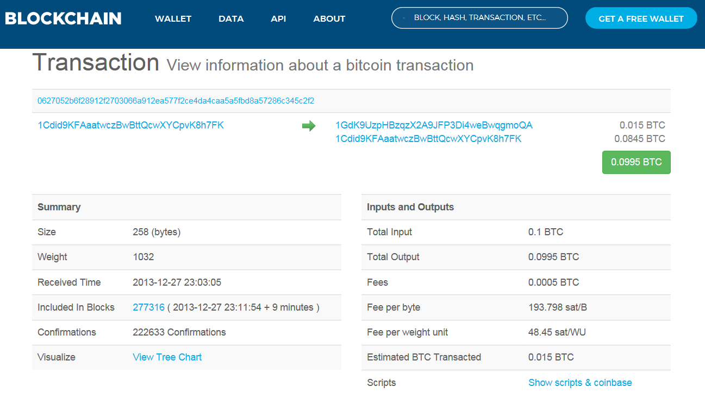
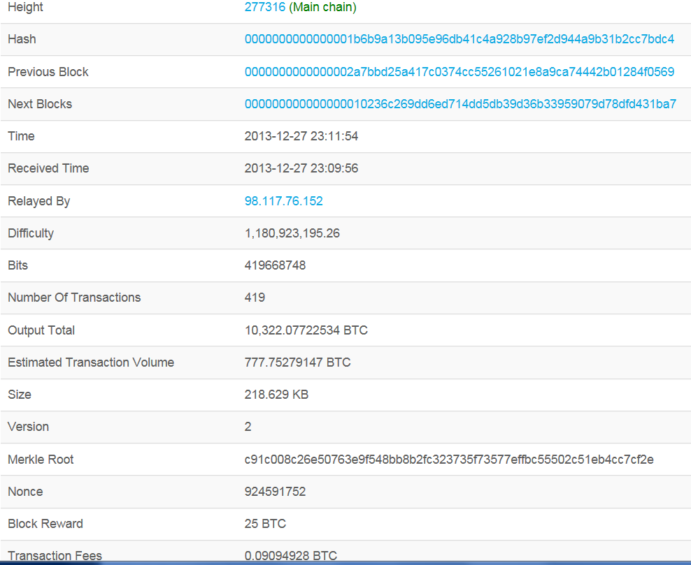
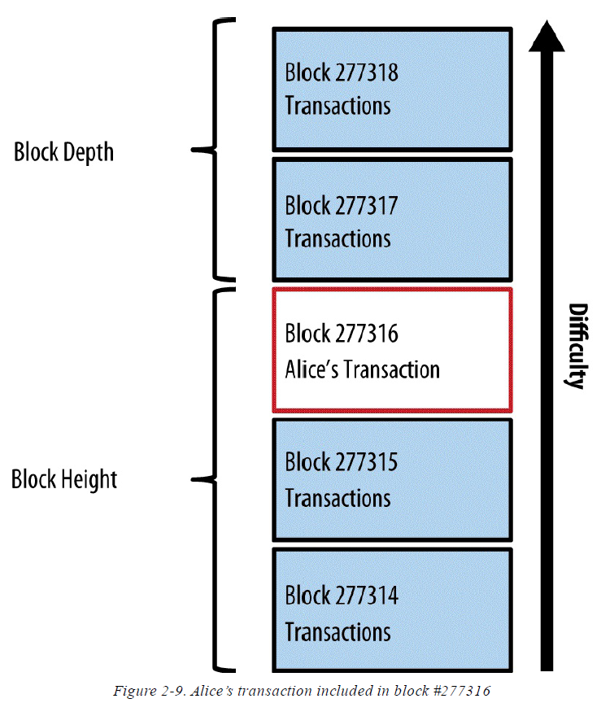

How BitCoin Works?
-
How BitCoin Works?

the bitcoin system consists of
* users with wallets containing keys * transactions that are propagated across the network * and miners who produce (through competitive computation) the consensus blockchain, which is the authoritative ledger of all transactions.
While tracking a transaction through the bitcoin network to the blockchain, we will use a blockchain explorer site to visualize each step. A blockchain explorer is a web application that operates as a bitcoin search engine, in that it allows you to search for addresses, transactions, and blocks and see the relationships and flows between them.
Popular blockchain explorers include:
* Bitcoin Block Explorer * BlockCypher Explorer * blockchain.info * BitPay Insight Each of these has a search function that can take a bitcoin address, transaction hash, block number, or block hash and retrieve corresponding information from the bitcoin network.T
Alice Buys a Coffee
* Alice buys a coffee from Bob's Cafe
* The POS machine generates a QR code containing the payment request * The QR code is a bitcoin url:
bitcoin:1GdK9UzpHBzqzX2A9JFP3Di4weBwqgmoQA?amount=0.015&label=Bob%27s%20Cafe&message=Purchase%20at%20Bob%27s%20Cafe
* The URL contains several key information:
A bitcoin address: "1GdK9UzpHBzqzX2A9JFP3Di4weBwqgmoQA"
* The QR code is a bitcoin url:
bitcoin:1GdK9UzpHBzqzX2A9JFP3Di4weBwqgmoQA?amount=0.015&label=Bob%27s%20Cafe&message=Purchase%20at%20Bob%27s%20Cafe
* The URL contains several key information:
A bitcoin address: "1GdK9UzpHBzqzX2A9JFP3Di4weBwqgmoQA"
The payment amount: "0.015"
A label for the recipient address: "Bob's Cafe"
A description for the payment: "Purchase at Bob's Cafe"
* Alice's wallet issue a transaction to Bob's Cafe on the blockchain. Alice's Transaction

A
-
Bitcoin Transactions
Transaction = Owner A authorize value transfer to Owner B
The Transaction contains the following information:
* Transaction Inputs
* Transaction Outputs
* Miner Collected Transaction Fee
* Proof of Owner (signing)

Satoshi
-
Transaction Chains
* Alice's Transaction A: Alice receives bitcoin from Joe
* Alice's Transaction B: Bob's Cafe receives bitcoin from Alice
Transaction B references A as an input and creates new outputs. The transactions form a chain:
Categorization
-
Typical Transaction Types
Common Transactions
* Simple Payment from one address to another address
* Sometimes a change is made to previous transaction's output

Aggregated Transactions
Aggregate several inputs into a single input. This is equivalent to the real world situation which you use lots of coins to form a bigger note.
Distributed Transactions
Distributes one input to multiple outputs representing multiple recipients. Just like processing a payroll.
S
-
Construct Transactions
Collecting the inputs
Usually a user's wallet keeps track of the outputs that can be used as inputs in future transactions. Full node client stores a copy of all the un-spent outputs from every transaction in the blockchain. While lightweight client stores only the un-spent outputs related to the current user. Sometimes the wallet doesn't maintain the unspents transactions. It will query bitcoin network to retrieve this info using APIs by different providers, or ask a full-node using API call. e.g.: $ curl https://blockchain.info/unspent?active=1Cdid9KFAaatwczBwBttQcwXYCpvK8h7FK { "unspent_outputs":[ { "tx_hash":"f2c245c38672a5d8fba5a5caa44dcef277a52e916a0603272f91286f2b052706", "tx_hash_big_endian":"0627052b6f28912f2703066a912ea577f2ce4da4caa5a5fbd8a57286c345c2f2", "tx_index":47854970, "tx_output_n": 1, "script":"76a9147f9b1a7fb68d60c536c2fd8aeaa53a8f3cc025a888ac", "value": 8450000, "value_hex": "0080efd0", "confirmations":222631 }, { "tx_hash":"0365fdc169b964ea5ad3219e12747e9478418fdc8abed2f5fe6d0205c96def29", "tx_hash_big_endian":"29ef6dc905026dfef5d2be8adc8f4178947e74129e21d35aea64b969c1fd6503", "tx_index":71083209, "tx_output_n": 0, "script":"76a9147f9b1a7fb68d60c536c2fd8aeaa53a8f3cc025a888ac", "value": 100000, "value_hex": "0186a0", "confirmations":167014 }, { "tx_hash":"d9717f774daab8d3dd470853204394c82e3c01097479575d6d2ee97d7b3bdfa1", "tx_hash_big_endian":"a1df3b7b7de92e6d5d57797409013c2ec8944320530847ddd3b8aa4d777f71d9", "tx_index":75974855, "tx_output_n": 0, "script":"76a9147f9b1a7fb68d60c536c2fd8aeaa53a8f3cc025a888ac", "value": 1000000, "value_hex": "0f4240", "confirmations":159173 }, { "tx_hash":"3f1df69df90d097981ca9c97ad8b6a32daed345565a433f8c8e472b2dab2ac79", "tx_hash_big_endian":"79acb2dab272e4c8f833a4655534edda326a8bad979cca8179090df99df61d3f", "tx_index":79887883, "tx_output_n": 1, "script":"76a9147f9b1a7fb68d60c536c2fd8aeaa53a8f3cc025a888ac", "value": 719787, "value_hex": "0afbab", "confirmations":153286 }, { "tx_hash":"417bdb6f5db3e830407f94d1a82d1667e738b19da3679b7263ebfb913394efdd", "tx_hash_big_endian":"ddef943391fbeb63729b67a39db138e767162da8d1947f4030e8b35d6fdb7b41", "tx_index":170905487, "tx_output_n": 0, "script":"76a9147f9b1a7fb68d60c536c2fd8aeaa53a8f3cc025a888ac", "value": 10000, "value_hex": "2710", "confirmations":73095 }, { "tx_hash":"d049d6039f9d1cb2625bac294d7465b4b1077bd5bc0e30e01e02b184db524c1f", "tx_hash_big_endian":"1f4c52db84b1021ee0300ebcd57b07b1b465744d29ac5b62b21c9d9f03d649d0", "tx_index":174630347, "tx_output_n": 0, "script":"76a9147f9b1a7fb68d60c536c2fd8aeaa53a8f3cc025a888ac", "value": 11100, "value_hex": "2b5c", "confirmations":70557 }, { "tx_hash":"b8a6470c7a38d0983effed00a3f75c74ba371da1387352f35d1df155851ea8d1", "tx_hash_big_endian":"d1a81e8555f11d5df3527338a11d37ba745cf7a300edff3e98d0387a0c47a6b8", "tx_index":175949432, "tx_output_n": 0, "script":"76a9147f9b1a7fb68d60c536c2fd8aeaa53a8f3cc025a888ac", "value": 10000, "value_hex": "2710", "confirmations":69651 }, { "tx_hash":"a2b9570e26e3991fc999c42dc8c6eea7b06514b61814da1a71b56c6ba2ae651c", "tx_hash_big_endian":"1c65aea26b6cb5711ada1418b61465b0a7eec6c82dc499c91f99e3260e57b9a2", "tx_index":175955161, "tx_output_n": 0, "script":"76a9147f9b1a7fb68d60c536c2fd8aeaa53a8f3cc025a888ac", "value": 10000, "value_hex": "2710", "confirmations":69642 }, { "tx_hash":"05230cb8cd8c6a3788ed41433dfdd68a1a608cc8feb3bc1c29d97ce84bec070e", "tx_hash_big_endian":"0e07ec4be87cd9291cbcb3fec88c601a8ad6fd3d4341ed88376a8ccdb80c2305", "tx_index":175955664, "tx_output_n": 0, "script":"76a9147f9b1a7fb68d60c536c2fd8aeaa53a8f3cc025a888ac", "value": 10000, "value_hex": "2710", "confirmations":69642 } ] } -
Creating the outputs
A transaction output is created in the form of a script that creates an encumbrance on the value. And this value can only be redeemed by the introduction of a solution to the script. This is equivalent to say: This output is payable to whoever can present a signature from the key corresponding to Bob's public addr. Plus, there is one more output (Alice's change: 0.1 BTC - 0.015 BTC) Alice's change payment is created by Alice's wallet as an output in the very same transaction as the payment to Bob. Essentially, Alice's wallet breaks her funds into two payments: one to Bob and one back to herself. She can then use (spend) the change output in a subsequent transaction. Transaction Info: 
-
Adding Transaction to the Ledger
transaction = 258 bytes long -> goes to bitcoin network -> transaction becomes part of new block -> block is mined bitcoin node = Any system, such as a server, desktop application, or wallet, that participates in the bitcoin network by ¡°speaking¡± the bitcoin protocol Any bitcoin node that receives a valid transaction it has not seen before will immediately forward it to all other nodes to which it is connected, a propagation technique known as flooding. Bob's View The flooding makes sure the transaction reaches Bob's wallet in a few seconds. Bob¡¯s wallet will immediately identify Alice¡¯s transaction as an incoming payment because it contains outputs redeemable by Bob¡¯s keys. Bob¡¯s wallet application can also independently verify that the transaction is well formed, uses previously unspent inputs, and contains sufficient transaction fees to be included in the next block. At this point Bob can assume, with little risk, that the transaction will shortly be included in a block and confirmed. A common misconception about bitcoin transactions is that they must be "confirmed" by waiting 10 minutes for a new block, or up to 60 minutes for a full six confirmations. Although confirmations ensure the transaction has been accepted by the whole network, such a delay is unnecessary for small-value items such as a cup of coffee. A merchant may accept a valid small-value transaction with no confirmations, with no more risk than a credit card payment made without an ID or a signature, as merchants routinely accept today.
-
Bitcoin Mining
Alice¡¯s transaction is now propagated on the bitcoin network. It does not become part of the blockchain until it is verified and included in a block by a process called mining. Transactions are bundled into blocks, which require an enormous amount of computation to prove, but only a small amount of computation to verify as proven. The mining process serves two purposes in bitcoin: * Mining nodes validate all transactions by reference to bitcoin¡¯s consensus rules. Therefore, mining provides security for bitcoin transactions by rejecting invalid or malformed transactions. * Mining creates new bitcoin in each block, almost like a central bank printing new money. The amount of bitcoin created per block is limited and diminishes with time, following a fixed issuance schedule. Every 10 minutes or so, miners compete against thousands of similar systems in a global race to find a solution to a block of transactions. Finding such a solution, the so-called Proof-of-Work (PoW), requires quadrillions of hashing operations per second across the entire bitcoin network. The algorithm for Proof-of-Work involves repeatedly hashing the header of the block and a random number with the SHA256 cryptographic algorithm until a solution matching a predetermined pattern emerges. The first miner to find such a solution wins the round of competition and publishes that block into the blockchain. At the time of this writing, the difficulty to find a solution is so high that it is profitable only to mine with application-specific integrated circuits (ASIC), essentially hundreds of mining algorithms printed in hardware, running in parallel on a single silicon chip.
-
Mining Transactions in Blocks
New transactions are constantly flowing into the network from user wallets and other applications. As these are seen by the bitcoin network nodes, they get added to a temporary pool of unverified transactions maintained by each node. As miners construct a new block, they add unverified transactions from this pool to the new block and then attempt to prove the validity of that new block, with the mining algorithm (Proof-of-Work). Transactions are added to the new block, prioritized by the highest-fee transactions first and a few other criteria. Each miner starts the process of mining a new block of transactions as soon as he receives the previous block from the network, knowing he has lost that previous round of competition. He immediately creates a new block, fills it with transactions and the fingerprint of the previous block, and starts calculating the Proof-of-Work for the new block. Each miner includes a special transaction in his block, one that pays his own bitcoin address the block reward (currently 12.5 newly created bitcoin) plus the sum of transaction fees from all the transactions included in the block. If he finds a solution that makes that block valid, he ¡°wins¡± this reward because his successful block is added to the global blockchain and the reward transaction he included becomes spendable. Jing, who participates in a mining pool, has set up his software to create new blocks that assign the reward to a pool address. From there, a share of the reward is distributed to Jing and other miners in proportion to the amount of work they contributed in the last round. Alice¡¯s transaction was picked up by the network and included in the pool of unverified transactions. Once validated by the mining software it was included in a new block, called a candidate block, generated by Jing¡¯s mining pool. All the miners participating in that mining pool immediately start computing Proofof-Work for the candidate block. Approximately five minutes after the transaction was first transmitted by Alice¡¯s wallet, one of Jing¡¯s ASIC miners found a solution for the candidate block and announced it to the network. Once other miners validated the winning block they started the race to generate the next block. Jing¡¯s winning block became part of the blockchain as block #277316, containing 420 transactions, including Alice¡¯s transaction. The block containing Alice¡¯s transaction is counted as one ¡°confirmation¡± of that transaction. Check the block info: https://blockchain.info/block-height/277316  Approximately 19 minutes later, a new block, #277317, is mined by another miner. Because this new block is built on top of block #277316 that contained Alice¡¯s transaction, it added even more computation to the blockchain, thereby strengthening the trust in those transactions. Each block mined on top of the one containing the transaction counts as an additional confirmation for Alice¡¯s transaction. As the blocks pile on top of each other, it becomes exponentially harder to reverse the transaction, thereby making it more and more trusted by the network. In the diagram in Figure 2-9, we can see block #277316, which contains Alice¡¯s transaction. Below it are 277,316 blocks (including block #0), linked to each other in a chain of blocks (blockchain) all the way back to block #0, known as the genesis block. Over time, as the ¡°height¡± in blocks increases, so does the computation difficulty for each block and the chain as a whole. The blocks mined after the one that contains Alice¡¯s transaction act as further assurance, as they pile on more computation in a longer and longer chain. By convention, any block with more than six confirmations is considered irrevocable, because it would require an immense amount of computation to invalidate and recalculate six blocks. We will examine the process of mining and the way it builds trust in more detail in Chapter 10. 